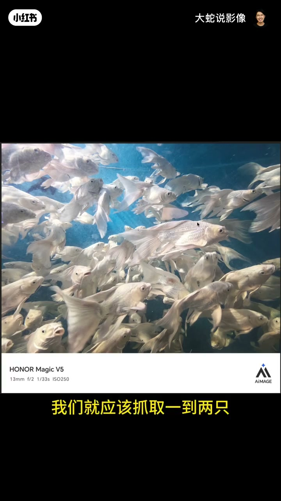
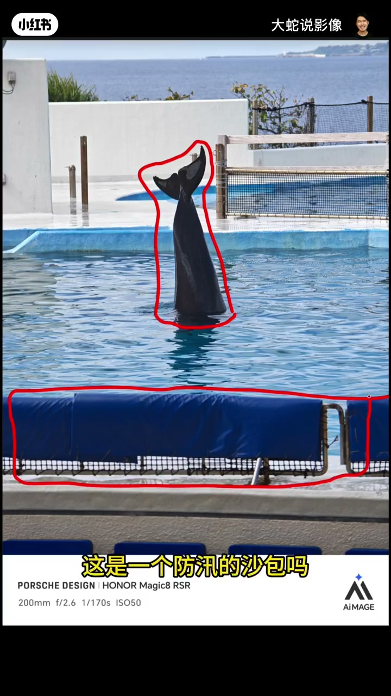
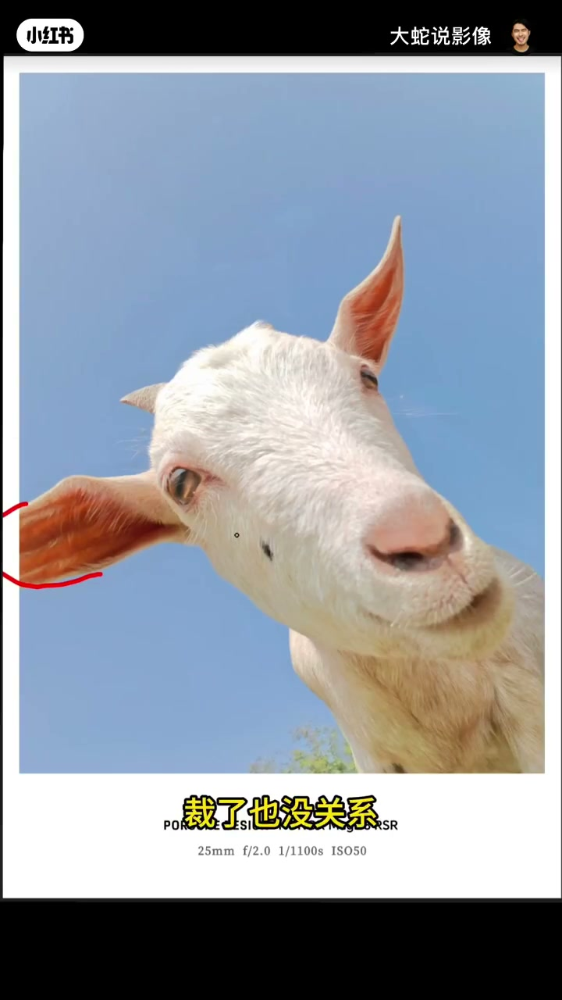
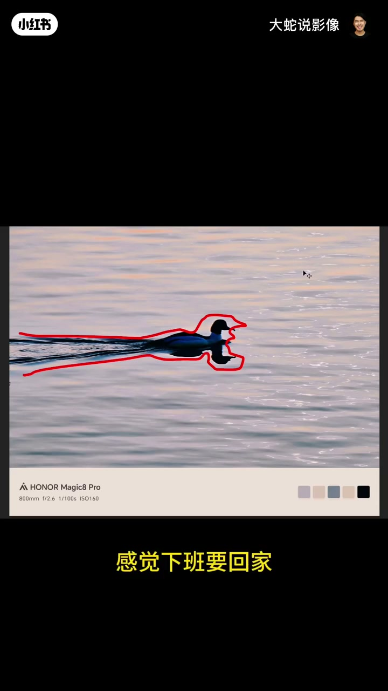

内容要点
第四期围动物片打转：慌乱鱼群要么拉远成群形留白，要么挑好看个体；砸水表演被沙包网棍抢戏且缺浪花；小羊趣味＋光感算合格；彩鱼靠颜色碰撞加分仍乱；猫证件照撞糙水泥失败；路灯鸽干净无聊；夕阳鸭有下班故事却因太晚身无光、头像套袜。核心反复：主体可读、杂物别抢、光要落在主体上。
知识结构
成群形留白，或挑好看个体互动。
清杂物；要浪花动态。
羊合格；彩鱼颜色加分；猫+糙水泥失败。
鸽无看点；鸭有故事缺主体光。
动物片先让主体好看或成可读形状，再清抢戏杂物；有故事也要把光打在主体细节上，否则只剩一坨剪影。
00:00-00:32慌乱鱼群：策略二选一
大家惊慌逃跑式的鱼：传统上抓一两只漂亮、有互动的；遇到这种密群就拉远，让鱼群成某一形状并留白。00:10。另一张稍好但鱼太丑——没人爱看丑鱼。

00:32-01:13砸水表演：杂物与缺动态
海豚／海狮尾巴砸下本可看，前景沙包、破网、多根棍把主体变成「看棍」；自然背景被毁，又缺跳入浪花，精彩度不够。00:45。

01:13-02:18羊合格，彩鱼加分，猫失败
小羊可爱有趣，背景干净光感均衡，耳朵略裁无妨——趣味性过关。01:20。彩鱼比白鱼好在有颜色，与蓝水碰撞加分，但游向四面仍乱。猫是证件照＋未打磨糙水泥，柔软与脏水泥冲突，失败。

02:18-03:02鸽无聊；鸭有故事却没光
路灯鸽干净但无看点。鸭子向前游有倒影与夕阳余晖，像下班赶路，故事在；问题是太晚光照只到水、不到鸭身，头像戴套看不见眼与毛——有光细节会饱满许多。02:35。

完整转录（135段）
以下文本由 Whisper medium 模型自动转录，可能存在少量识别误差，已尽可能修正。
大家都惊慌失措的到处逃跑
如果说我们拍任务鱼
要么找一些外形比较漂亮
或者是这个形状比较漂亮
或者颜色比较鲜艳的
按照传统上
我们就应该抓取一到两只
它们形成一些互动
我们可以拍
但是遇到这种
你要么再拉远一点
让整个鱼群
可能形成某一些形状
一大堆鱼
对不对
流出空间感
变成一片
对不对
旁边有一些留白
你构图的时候
就可以把它构多一点
这个就稍微比刚那个好一点
但是这个鱼太丑了
没有人喜欢看一个
这么丑的鱼
应该是一个海豚
或者是一个海狮
应该是在某个表演现场
看到海洋生物
露出了个尾巴砸下去
但一个是前景
这个太丑了
这个是个什么东西
这是一个防汛的沙包吗
旁边一个这么破的网
毁了画面
还有一个就是背景这一块
本来这几个自然景
还是挺干净的
但是这个网
加上这里这几根棍
这个网和这个棍
显得很奇怪
显得这里有一个棍
主体是一个棍
这里有一个棍
很多根棍插在这个上面
你就会感觉不知道看的
另外这个也不是很精彩
还有一个就缺少一个浪花
没有动态
如果它有这个浪花
它是跳进去的
那可能还有一些看点
这个羊这张其实还是挺可爱的
它非常有趣味性
背景也干净光感也运用得好
耳朵裁了一点
裁了也没关系
整体它的这种趣事性
和趣味性在这里
光线的平衡和运用
也是比较均衡的
所以也还行
这个鱼就比刚刚白色
那个鱼要好一点
主要是什么
主要是这个鱼它有颜色
背景的水的蓝色
也是比较突出的
两个颜色碰撞好一点
虽然这个鱼也是很慌乱
有的往这边走
有的往这边走
四面八方的
有的往这边走
很乱
但是整体因为它颜色的冲突
上面是给它加分了
所以相对来说好一点
但整体来说也是一样
眼睛不知道看着
唇有颜色也没用
这个猫也是很平庸
给猫拍了个证件照
背景还是一个钢筋水泥
本身猫的柔软
再加上钢筋水泥之间
还不算是钢筋
纯水泥
这个水泥还是没打磨过的水泥
糙水泥
上面一大堆这些泥
脏稀稀的
那就导致整个猫和水泥之间
很冲突
不舒服
失败
好
这个鸽子趴在路灯上面
这张是比较干净的
但是拍的也还行
但是没什么看点
没什么好看的
好
这个鸭子还是很有故事性的
这个鸭子往前游
有一定的倒影
暖暖的画面里面
也有一些夕阳的一些余晖
挺好的
感觉下班要回家
在路上很着急
但核心是没拍清楚
整个鸭子
你看这像是戴了个头套
是不是
不知道的时候还以为穿了个袜子
套在头上
看不到眼睛
毛也不行
问题应该是太晚了
这个太阳已经落得差不多了
只能照到水上
照不到这个鸭子身上了
这个鸭子身上的羽毛
要是有点光
可能会好很多
它可能会给整个画面
有很多的加持
让它的细节更加饱满
现在就是一坨
好
那我们今天这个点评就到这了
谢谢大家了